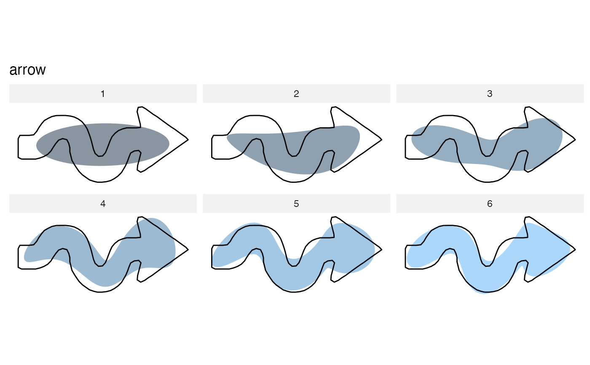
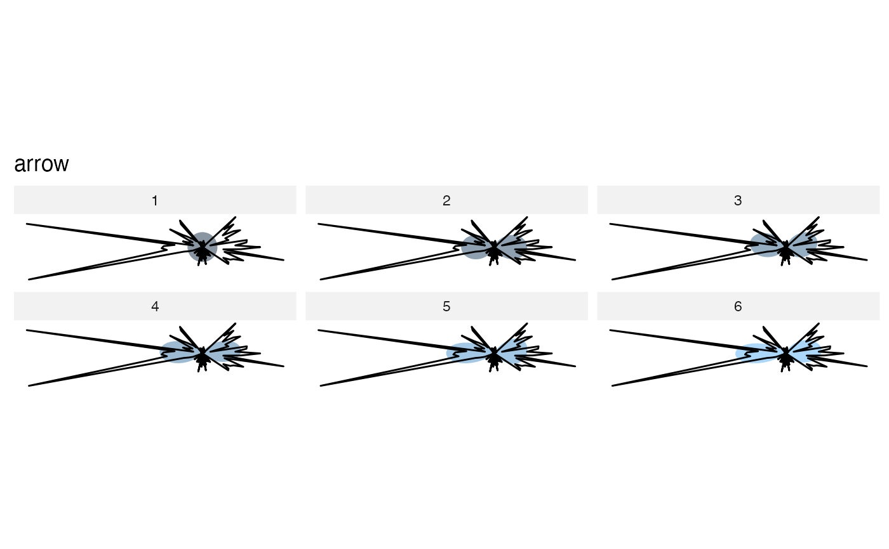
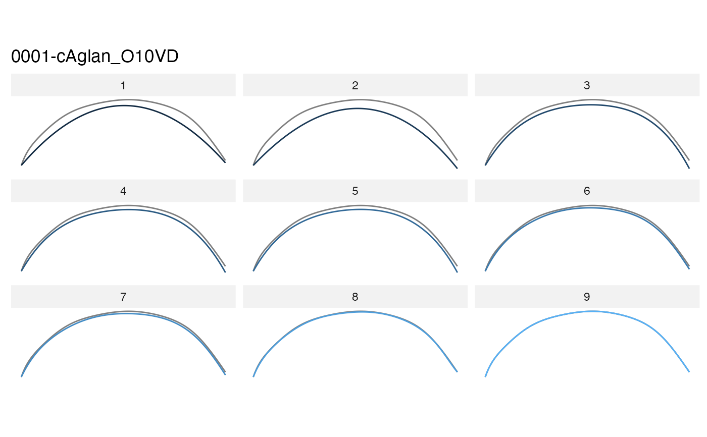
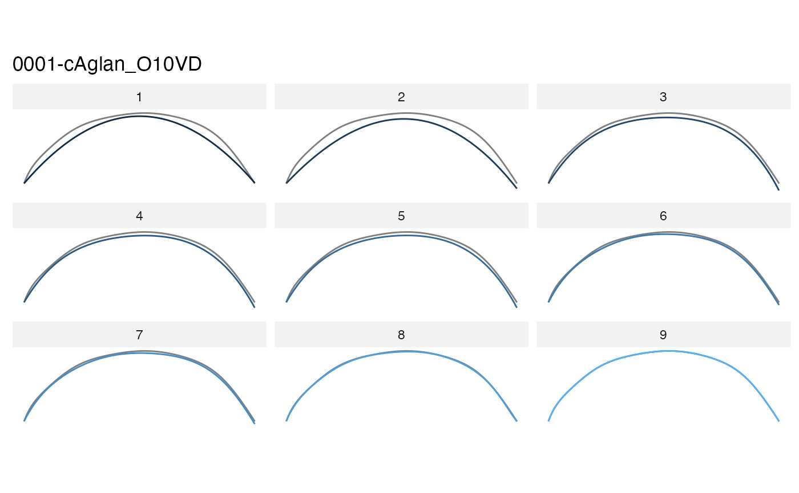

Calculate and displays reconstructed shapes using a range of harmonic number. Compare them visually with the maximal fit. This explicitely demonstrates how robust efourier is compared to tfourier and rfourier.
calibrate_reconstructions_efourier(x, id, range = 1:9) calibrate_reconstructions_rfourier(x, id, range = 1:9) calibrate_reconstructions_tfourier(x, id, range = 1:9) calibrate_reconstructions_sfourier(x, id, range = 1:9) calibrate_reconstructions_npoly( x, id, range = 2:10, baseline1 = c(-1, 0), baseline2 = c(1, 0) ) calibrate_reconstructions_opoly( x, id, range = 2:10, baseline1 = c(-1, 0), baseline2 = c(1, 0) ) calibrate_reconstructions_dfourier( x, id, range = 2:10, baseline1 = c(-1, 0), baseline2 = c(1, 0) )
| x | the |
|---|---|
| id | the shape on which to perform calibrate_reconstructions |
| range | vector of harmonics on which to perform calibrate_reconstructions |
| baseline1 | \((x; y)\) coordinates for the first point of the baseline |
| baseline2 | \((x; y)\) coordinates for the second point of the baseline |
a ggplot object and the full list of intermediate results. See examples.
Other calibration:
calibrate_deviations(),
calibrate_harmonicpower(),
calibrate_r2()
### On Out shapes %>% calibrate_reconstructions_efourier(id=1, range=1:6)# you may prefer efourier... shapes %>% calibrate_reconstructions_tfourier(id=1, range=1:6)#' you may prefer efourier... shapes %>% calibrate_reconstructions_rfourier(id=1, range=1:6)#' you may prefer efourier... # todo #shapes %>% # calibrate_reconstructions_sfourier(id=5, range=1:6) ### On Opn olea %>% calibrate_reconstructions_opoly(id=1)olea %>% calibrate_reconstructions_npoly(id=1)olea %>% calibrate_reconstructions_dfourier(id=1)